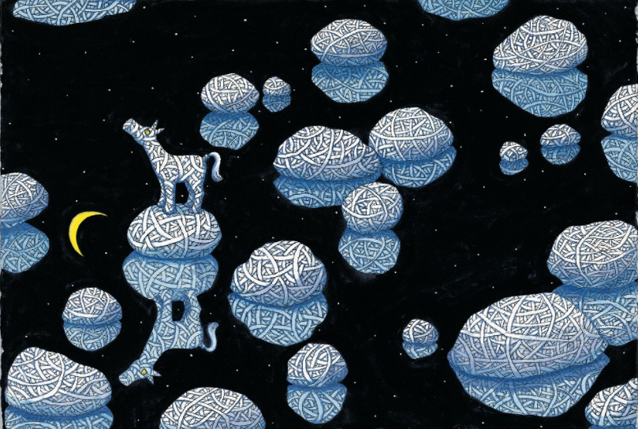
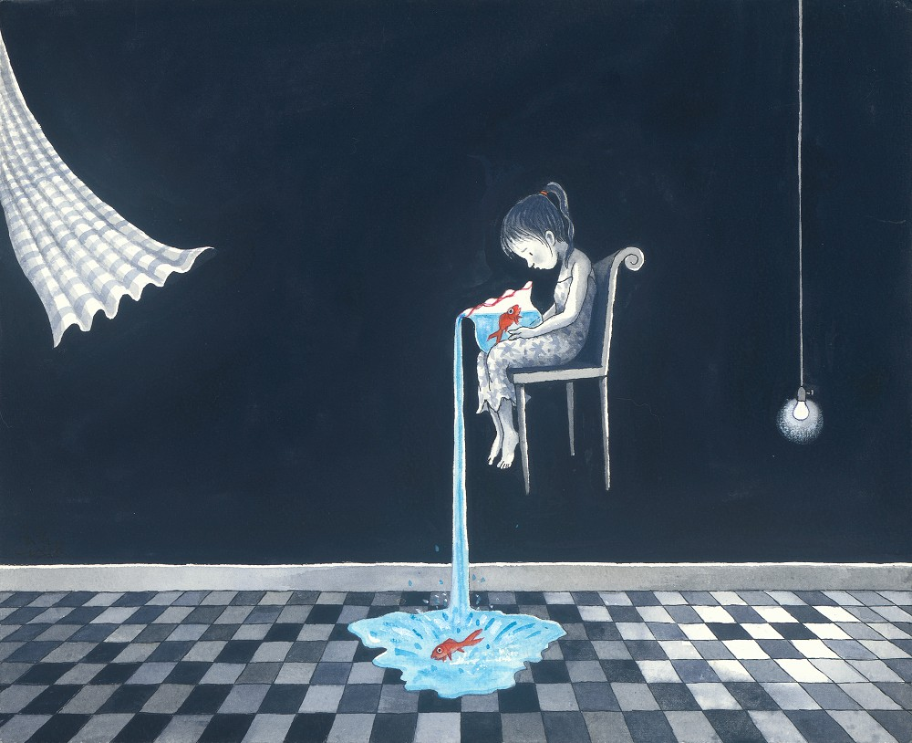
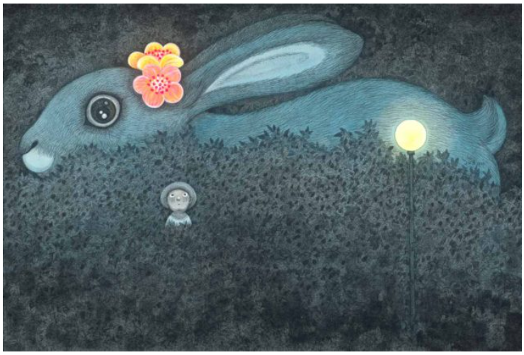

誠品畫廊於2021年3月5日至4月10日推出展覽「幾米──畫室裡的呢喃」，這是幾米首度與畫廊合作，也呼應這個特別的時期，我們將精選90餘件作品展出，包含數件未曾曝光的繪畫作品，以及2003年因SARS疫情侵襲，幾米有感而發所創作的37件《謝謝你毛毛兔，這個下午真好玩》系列原作。
繃帶馬、翹課的豬、微笑的魚…幾米的故事人物躍身於畫廊 《失樂園》裡的主角以各種獨特的方式為受傷的心發聲，有的害羞寂寞，有的世故早熟，有的遺失了童年，有的終日尋求不可知的答案……他們天真的話語表達了我們內心曾有的困惑，所有不被理解的情緒，在失樂園裡都得到了撫慰。

幾米用簽字筆、壓克力顏料與水彩勾勒出單色調的黑白畫面，畫面中沒有直指死亡或失去，透過場景的細膩安排刻劃出豐富的情感表現。你或許熟知溫暖療癒的幾米，但經由展出作品的擇選與當代視角，我們邀請大家以不同的思考方向，去探察幾米畫筆下所傳達的內心世界。

《失樂園》裡的主角以各種獨特的方式為受傷的心發聲，有的害羞寂寞，有的世故早熟，有的遺失了童年，有的終日尋求不可知的答案……他們天真的話語表達了我們內心曾有的困惑，所有不被理解的情緒，在失樂園裡都得到了撫慰。

展覽深入幾米的畫室裡，把焦點放在色彩較為冷調及灰階的作品上，畫面中的主角有的孤寂地坐在黑暗中的角落，有的以惶恐不安的神情走在不見盡頭的黑森林中。這些角色心中的脆弱似乎只有自己清楚，他們在被遺忘的角落中獨自面對世界的殘酷。

《毛毛兔》系列描述大家逃離了被瘟疫所吞噬的廢棄城市，曾經的小女孩已成為老太太，在荒廢的動物園裡再度與毛毛兔重逢，毛毛兔將老太太心中沈睡的小女孩喚醒，經歷了一場迷人的甜蜜夢境。